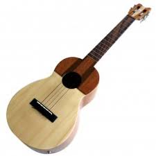

קוואטרו ונצואליאני
זוכרים את הפרק בסיינפלד בו אליין פוגשת חברים חדשים, דומים מאוד לג'רי, ג'ורג' וקריימר מבחינה חיצונית אבל שונים מהם לחלוטין באופי? ובכן זה קצת מזכיר את הדמיון בין הקואטרו הונצואליאני ליוקוללה. חיצונית הכלים דומים למדי זה לזה אם כי הקואטרו מעט ארוך יותר ודומה יותר ספציפית ליוקוללה בריטון. אך ישנו הבדל אחד משמעותי - המיתרים של הקוואטרו הם מעין תמונת מראה הפוכה למיתרי היוקוללה. בעוד שביוקוללה שני המיתרים החיצוניים הם הגבוהים ביותר, בקוואטרו שני מיתרים אלו הם מיתרי הבס, מה שיוצר חוויית נגינה מוזרה ביותר עבור מי שרגיל לנגן ביוקוללה.
על כל פנים מדובר בכלי מגניב ביותר שמפיק צליל מעניין שדומה מאוד לצליל של היוקוללה אבל עם מעט יותר עומק.